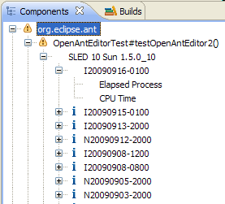
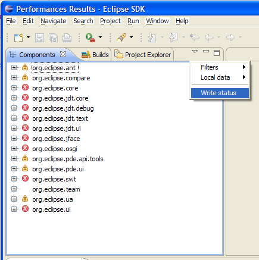
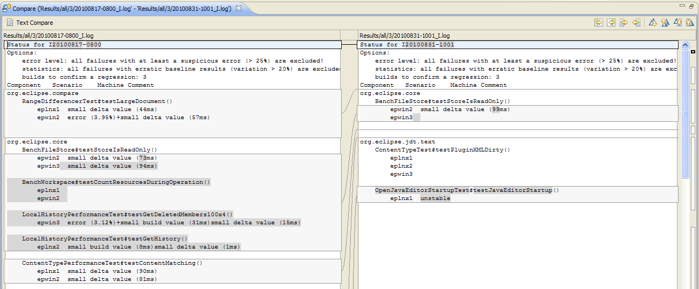

This view shows the performance results in similar way than the one used to generate the performance results, hence make it easy to match the numbers in the corresponding page HTML page.
When starting the tool for the first time, this view is empty as no data has been populated, neither from the local data files nor from the performance results database.
Typically, the Eclipse builder runs performance tests for each component after the build is made on several performance test machines. Each component defines one or several specific performance test suites made of several test (aka scenario).
Several performance numbers (e.g. Elapsed Process Time and CPU Time) are stored for each scenario and all build results are available in the performance results database.
Hence the tree structure is made as follow:
Component
+ Scenario
+ Test machine
+ Build
+ Performance numbers
and may look as follow:

Several icons are displayed on tree element, here are their meaning.
The red cross means that there's at least one scenario on one machine for the last build with a failure (i.e. a regression over 10%).
The warning icon means that some warnings occur for some results. The current possible warning are:
The information icon gives some other interesting information:
Note that for component and scenario level, the status is the aggregation of the children status. That means that as soon as one scenario is in error then the component is also flagged in error. And of course the higher severity is displayed masking lower possible icons.
There are several possible filters in this view:
As baselines results are not really useful for the survey, the filter is activated by default in this view. Currently the survey only concerns the fingerprints scenario, hence the corresponding filter is also activated by default.
From this view, it is also possible to write the status file for the last active build (see Last build) by using the Write status item of the View menu:

The written status file will contain all scenarios which have failures, except those excluded by the status preferences set in the preferences page (see Status)
Then it's easy to see the new regression occurring in a build when comparing to the previous build status file:
